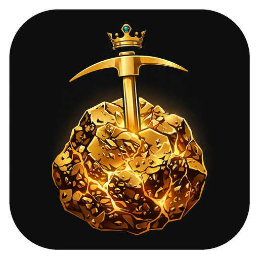

Ore Kingdom
The ORE miners' forum. Read free — post with your wallet.
Ore Kingdom is a community forum for the ORE ecosystem: mining, markets, development, and the people digging. Public threads are open to anyone — reading is free and needs no wallet. To post, you sign in with a Solana wallet holding a .skr name, and that name becomes your forum name.
Your forum name is your wallet. Everything you do here is permanently linkable to your on-chain finances. That is stated before you sign in, and again before the one permanent thing the forum offers: a founding badge.
- Free. This version takes no payments. There is no paid tier, badge, or pin for sale.
- Founding 500. The first 500 members claim a free founding badge — numbered, permanent, and bound to the claiming wallet.
- Moderated in the open. Every post can be reported in-app; enforcement is recorded in a public moderation log.
Ore Kingdom is an independent community forum published by Raaru. It is not affiliated with the ORE protocol or Regolith Labs. Ore Kingdom is Raaru's community front door for the ORE ecosystem — the public forum alongside its ORE data tools.